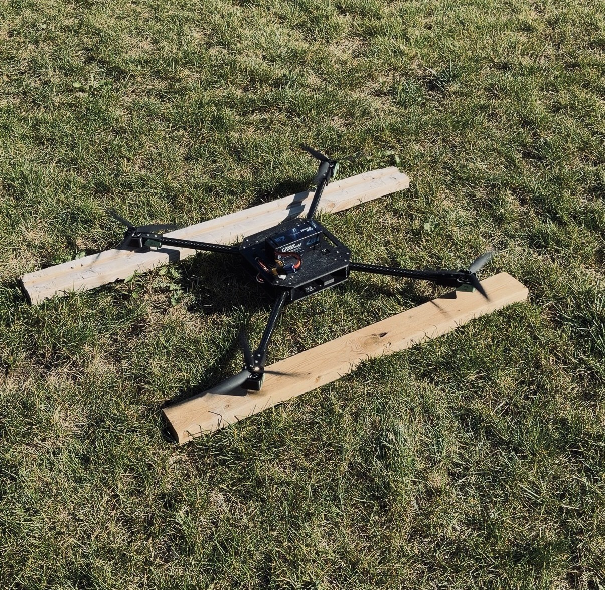

Autonomous quadcopter
A custom-built autonomous drone, designed from the ground up to carry a payload, now able to fly under its own control.
- Frame
- 550 × 550 mm
- Config
- X-quad · 4 rotor
- Motors
- 4× 900 KV
- Power
- 1× 6S LiPo, centre-mounted
- Autopilot
- Pixhawk · ArduPilot
- Structure
- 2× 7 mm PA6-CF plate + carbon tube
SolidWorksFusion 360Ansys WorkbenchFDM 3D printingDFMA
View project